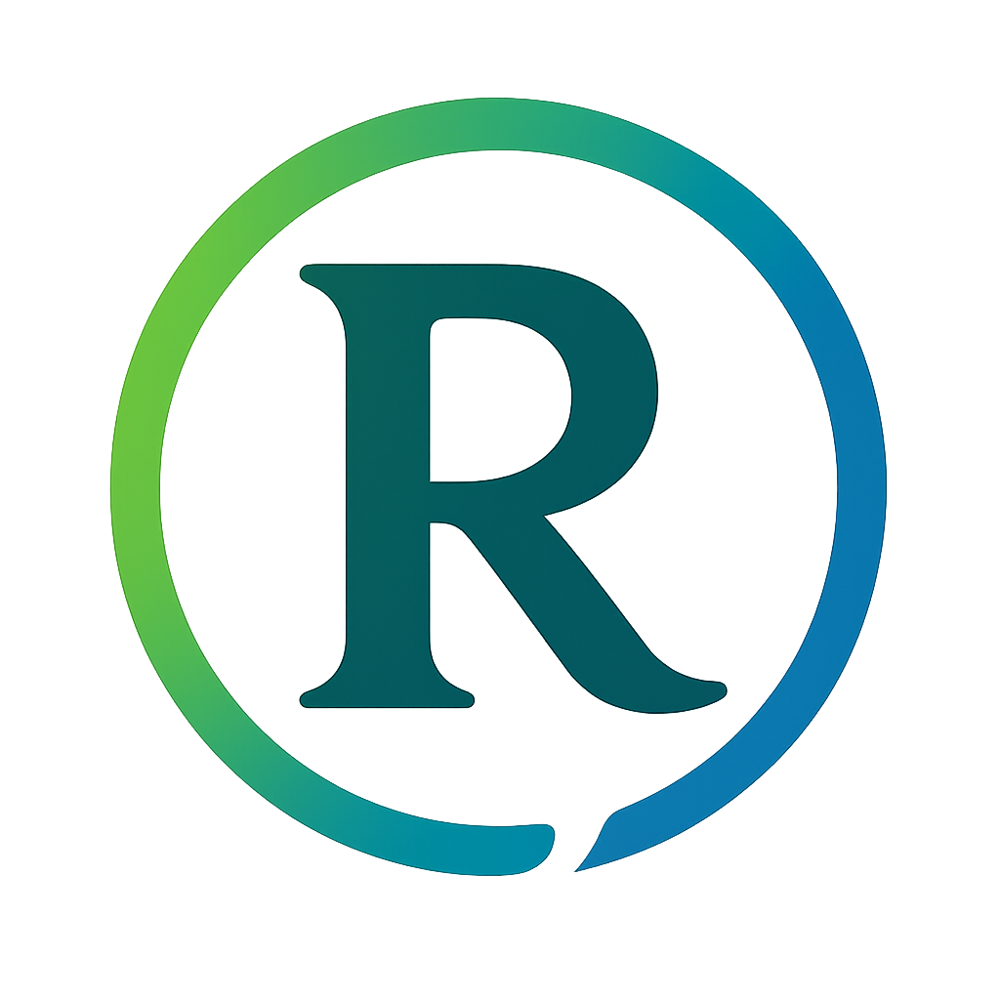

<!-- Navigation -->
<nav>
  <a href="index.html" class="logo">
    
  </a>
  
  <button class="mobile-menu-btn" aria-label="Toggle navigation menu" aria-expanded="false" aria-controls="nav-links">
    <span class="hamburger-icon"></span>
  </button>
  
  <div class="nav-links" id="nav-links" aria-hidden="true">
    <a href="index.html#photography" aria-label="View photography galleries">Photography</a>
    <a href="index.html#projects" aria-label="View projects">Projects</a>
    <a href="about.html" aria-label="About Royce">About</a>
    <a href="connect.html" aria-label="Contact information">Connect</a>
    <button id="theme-toggle" class="theme-toggle" aria-label="Toggle dark mode" aria-pressed="true">
      <i class="fas fa-moon"></i>
      <i class="fas fa-sun"></i>
    </button>
  </div>
  
  <div class="overlay" id="overlay"></div>
</nav>

<script>
  // Mobile navigation functionality
  document.addEventListener('DOMContentLoaded', function() {
    const mobileMenuBtn = document.querySelector('.mobile-menu-btn');
    const navLinks = document.querySelector('.nav-links');
    const overlay = document.querySelector('.overlay');
    
    // Set current page as active
    const currentPath = window.location.pathname;
    const currentPage = currentPath.split('/').pop();
    
    document.querySelectorAll('.nav-links a').forEach(link => {
      const linkHref = link.getAttribute('href').split('#')[0];
      if ((currentPage === '' && linkHref === 'index.html') || 
          (currentPage && linkHref === currentPage)) {
        link.setAttribute('aria-current', 'page');
      }
    });
    
    mobileMenuBtn.addEventListener('click', () => {
      const isOpen = mobileMenuBtn.classList.toggle('open');
      navLinks.classList.toggle('open');
      overlay.classList.toggle('active');
      
      // Update ARIA attributes
      mobileMenuBtn.setAttribute('aria-expanded', isOpen);
      navLinks.setAttribute('aria-hidden', !isOpen);
    });
    
    // Close menu when clicking outside
    overlay.addEventListener('click', () => {
      mobileMenuBtn.classList.remove('open');
      navLinks.classList.remove('open');
      overlay.classList.remove('active');
      mobileMenuBtn.setAttribute('aria-expanded', 'false');
      navLinks.setAttribute('aria-hidden', 'true');
    });

    // Close menu when pressing Escape key
    document.addEventListener('keydown', (e) => {
      if (e.key === 'Escape' && navLinks.classList.contains('open')) {
        mobileMenuBtn.classList.remove('open');
        navLinks.classList.remove('open');
        overlay.classList.remove('active');
        mobileMenuBtn.setAttribute('aria-expanded', 'false');
        navLinks.setAttribute('aria-hidden', 'true');
      }
    });
    
    // Theme toggle functionality
    const themeToggle = document.getElementById('theme-toggle');
    const htmlElement = document.documentElement;
    
    // Check for saved theme preference or use default (dark)
    const savedTheme = localStorage.getItem('theme') || 'dark';
    
    // Apply the saved theme on page load
    if (savedTheme === 'light') {
      htmlElement.classList.add('light-mode');
      themeToggle.setAttribute('aria-pressed', 'false');
    } else {
      themeToggle.setAttribute('aria-pressed', 'true');
    }
    
    // Toggle theme when button is clicked
    themeToggle.addEventListener('click', () => {
      // Toggle light-mode class on html element
      htmlElement.classList.toggle('light-mode');
      
      // Update button aria-pressed state
      const isLightMode = htmlElement.classList.contains('light-mode');
      themeToggle.setAttribute('aria-pressed', !isLightMode);
      
      // Save preference to localStorage
      localStorage.setItem('theme', isLightMode ? 'light' : 'dark');
    });
  });
</script>
